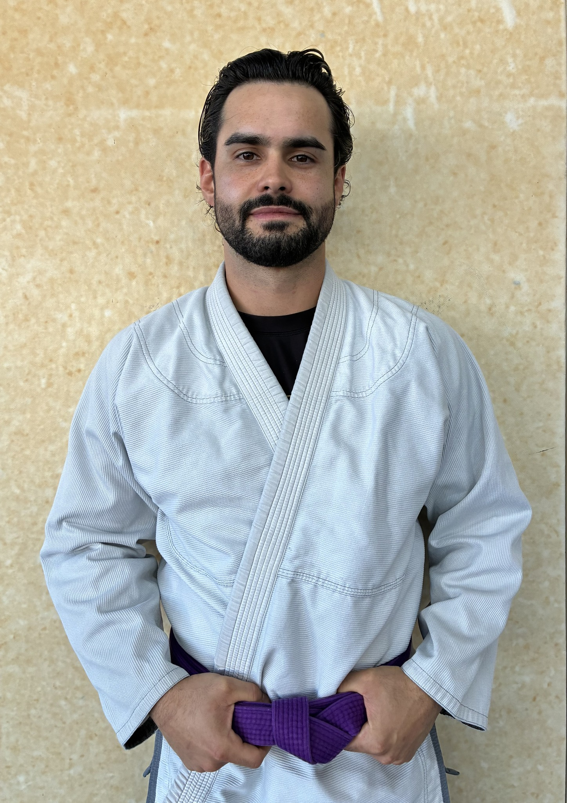

THE INSTRUCTOR
BEHIND AWA
Kenny brings a rare combination of military discipline and martial arts expertise to Gonzales County. After serving in the U.S. Air Force, he spent years teaching Brazilian Jiu-Jitsu across the world before bringing his passion home to Texas.
His experience isn't limited to one school or one lineage. Training and teaching in different countries and under different instructors gave Kenny a broad, adaptable approach — one that works for kids as well as competitors, beginners as well as seasoned practitioners.
His mission is simple: help this community build the next generation of warriors — on and off the mats.
On Teaching Kids
The mat is where character gets built. Kids don't just learn technique here — they learn how to lose with grace, how to keep going when it's hard, and how to respect the person across from them.
On Adult Training
Adults don't need someone to go easy on them. They need honest instruction, real challenge, and a space where progress is visible. That's what we build here.
On This Community
Gonzales County deserves world-class instruction. The size of a town doesn't limit what you can build inside it — and AWA is proof of that.